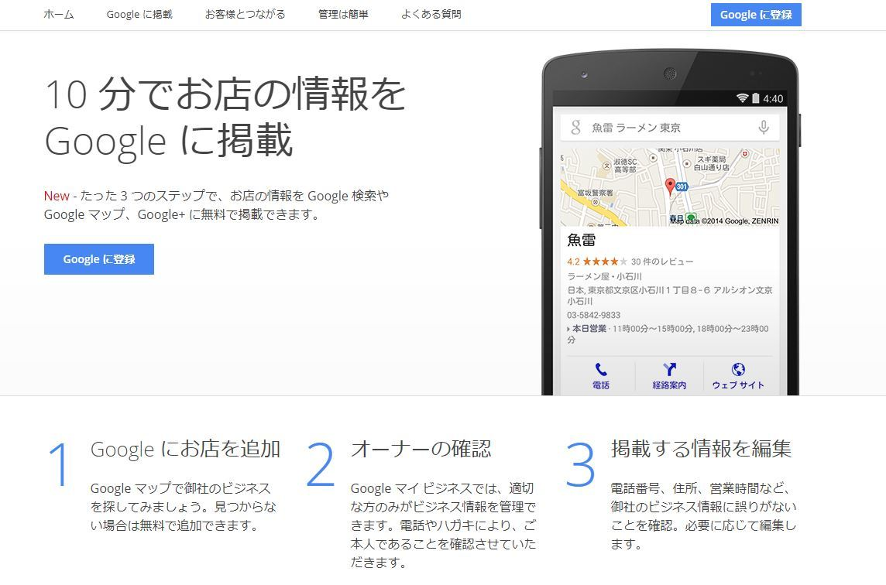
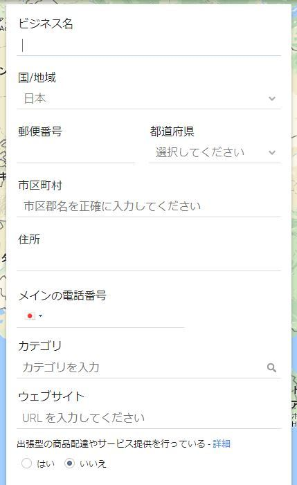
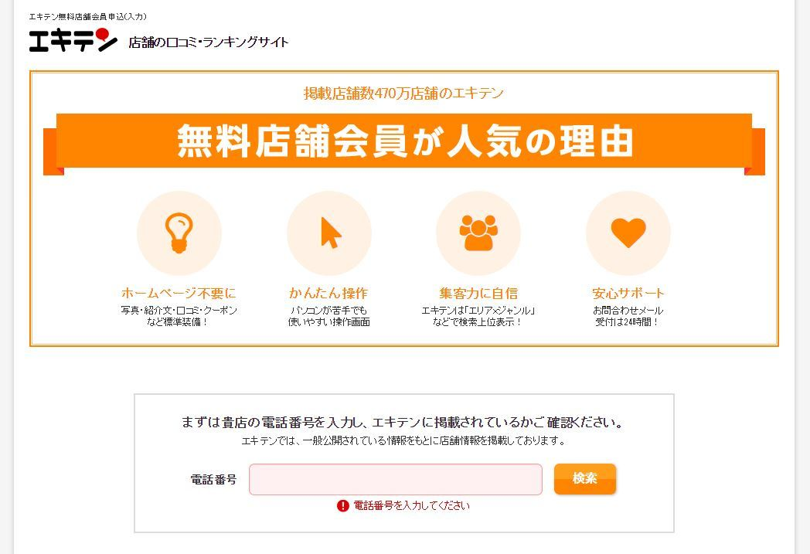
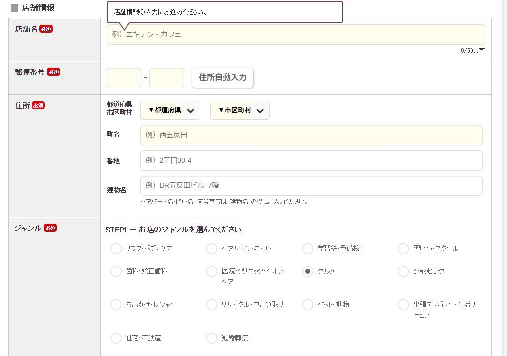

| 確実に売上げアップを実現する飲食店経営術 ～無料で出来ることまとめ～ | |
| 飲食店経営サポート塾 | |
| (2017) | |
確実に売上げアップを実現する飲食店経営術 〜無料で出来ることまとめ〜
本書は、「なんとなくの方法を伝える」だけの本ではありません。飲食店経営をしていると、どこの業者がいいのかと比較検討する時間も惜しいですよね。
何を隠そう、私自身飲食店経営をしていましたので、よくわかっています。
実際に飲食店を経営しているあなたにとって、有益な情報を詰め込んでいます。方法を語るだけではなく、実際におすすめの会社/サービス名までご提案。本書でおすすめしているサービスはどれもこれも無料で行なうことが出来るので、お店にとってのリスクはゼロです。
スマホを持っている人で、Googleマップを知らない人/使わない人はほとんどいないと思います。それくらい、多くの人がGoogleマップを頼りに移動している人が多いです。特に旅行や出張などで知らない土地に行ったときはそうです。
しかし、Googleマップを見てみると、マップ上に出てくるお店と出てこないお店がありますよね。
「掲載されるには一定の基準が必要なのか？」
「Googleの中の人が知っているお店だけが掲載れているのか？」
などと思うかもしれませんが、実はGoogleマップには、自店を登録することが可能です。全世界の人が利用しているGoogleマップに、あなたのお店を掲載することが出来るのです。それも、無料で。
しかもGoogleマップには営業時間や定休日、電話番号なども登録することが出来るので、無料登録をするだけで集客アップにつなげることが出来るのです。
※ただし、あなたがお店のオーナー/管理者である必要がありますので、ご注意下さい。
それでは、具体的に登録の仕方を見てみましょう。こういった作業はPCを使ったほうがスムーズなので、PC画面を基本として説明します。
電子書籍で読んでいる方は、スマホ/タブレットを片手にPCを操作しましょう。
まず、Googleマイビジネス（https://www.google.co.jp/business/get-started.html）を開きます。『Googleマイビジネス』と検索すれば出てきます。

まず青色の【Googleに登録】ボタンをクリックします。
すると、下の画面に移動します。

全ての項目を入力したら、最下部の「続行」を選択して下さい。次の画面でも、「続行」を選択します。
ここまでで、初期設定は完了です。この時点で既に、Googleマップにあなたのお店が掲載されています。
すると、あなたのビジネスの管理画面に遷移します。「営業時間」や「定休日」などの細かな設定は、管理画面で設定が可能です。管理画面では、クチコミの確認なども可能です。
登録までの手間やハードルもかなり低いので、Googleマップへの登録は、必ず行いましょう。
エキテンとは、
・飲食店
・学習塾
・美容院
・歯科医院
・ネイルサロン
・ペットショップ
・ホテル
・英会話教室
・ダンス塾
・フォトスタジオ
・花屋
・リサイクルショップ
等々、あらゆる店舗型ビジネスの、日本最大級の総合クチコミサイトです。こちらも無料で掲載が可能なうえに登録も簡単ですので、必ず登録しましょう。
公式ページでも、
「掲載は無料です。初期費用0円、月額0円、成果報酬もいただきません。 お店のページ内に広告を掲載させていただくことで、店舗関係者様の費用負担ゼロを実現しています。コストをかけずに集客を強化するなら、エキテンがおすすめ。掲載後「新規のお客様が増えた」という事例多数！」
としっかり書いてあります。有料プランもありますが、無料掲載が基本のサイトなので、余計な営業がかかることもありません。
営業時間などの基本情報をはじめ、メニュー情報、写真、クーポンの設置も可能です。クチコミへの返信機能も備わっています。
まず、エキテンの店舗登録用ページ（http://www.ekiten.jp/charge/advtop/?opt=chg_footer
）にアクセスします。『エキテン』と検索すれば出てきます。
ここのページに目を通せば、かなりイメージが湧くと思います。
上記サイトに飛んで、ページの各所にあるオレンジ色のボタン【無料で掲載をはじめる】をクリックします。
すると、下の画面になります。

電話番号を入力して、【検索】ボタンをクリックします。既にあなたのお店がエキテンに登録済みの可能性があるので、確認します。
登録がまだされていなければ、引き続き下の店舗情報を入力していきます。ジャンルは、グルメを選択して下さい。

店舗情報、担当者情報の入力が完了したら、下の方にあるオレンジ色の【確認画面へ】をクリックして下さい。
店舗の登録は、ここまでで完了です。店舗の登録が完了したら店舗の管理画面ができますので、写真などの情報を適宜入力して下さい。
SNSと言っても、かなり多くの種類があります。代表的なもので言うと、
・twitter（ツイッター）
・facebook（フェイスブック）
・instagram（インスタグラム）
などです。
それぞれ特徴がありますが、基本的には全て、個人の現在の人間関係内で情報発信や意見交換をするというものになります。
最近では、飲食店でもSNSを積極的に活用しているお店が多くあります。SNSは受け手と出し手がリアルタイムで情報を共有出来るという点が魅力的であり、例えば「本日限定のクーポンあります！」とか「本日は店休日です」ってことが可能です。
しかし、そもそもお店を知られていない場合、SNSで情報発信をしても殆ど誰も目にすることはありませんし、反応を得ることが出来ません。結果、一定期間継続した後にSNSをでの情報発信をやめてしまうこととなります。
今回オススメしたいのは、いわゆるSNSではないかもしれませんが、ブログです。「え？TwitterとかFacebookとかじゃなくて、今更ブログ？」って思われる方も多いかもしれません。しかし、ファンがほとんどいない状態のお店が情報を発信する手段としては、ブログが最適です。
まず、ブログに文字数制限はありません。Facebookも長文の投稿が可能ではありますが、媒体の性質上長文は好まれません。つまり、誰もFacebookの長文は読みません。Twitterは140文字まで（近い将来倍になるかもしれません）ですし、Instagramには文字数制限が無いと言われていますが、そもそも写真がメインの媒体なので、instagramで文章を読む人は居ないです。
まずファンが少ない飲食店の場合は、お店のこだわりや店主の熱意、料理の魅力などを、不特定多数の第３者に伝える必要があります。これを伝える上で、ある程度の文字数が伴う文章が必要になります。
次にブログのメリットとして、インターネットブラウザの検索結果に表示がされやすいです。ブログ以外のSNSの場合、検索結果に引っかかってくるのは登録アカウント名（店名）のみですので、どれだけ色々な内容で投稿していたとしても、最新の投稿が表示されますし、過去の投稿を遡ってはもらえない場合が多いです。一方ブログの場合、ブログ自体が検索結果に反映されるのは勿論のこと、投稿記事一つ一つが検索結果に反映されますので、検索結果としてお店のブログが露出する機会が多くなります。
また、ブログの場合はSNSと比べて文字を読ませることが出来るので、お店の主張をしっかりと伝える事ができます。
使いやすさと知名度の高さから見て、アメブロ（https://dauth.user.ameba.jp/login/ameba）が無難です。新規登録から情報を入力していって、ブログを作成しましょう。アメブロは、無料です。
ユーザーは、テイクアウトを行っている飲食店を地名/駅名などから検索して、ウェブ/アプリ上から直接テイクアウト注文することが可能です。その検索結果にあなたのお店が出てくれば、ユーザーはテイクアウト注文をしてくれます。
テイクアウトは、カフェ等、客の滞在時間が長く回転率が悪い割に客単価も低いというお店に向いています。あとは、お好み焼き店等、原価率が低いお店も良いでしょう。
なおテイクアウトナビは現在、初期登録費用＆ 月額費用が無料で登録出来るキャンペーン開催中（※終了時期未定）であるため、売上が立たなければ費用が一切かからないため、ノーリスクで始めることが出来ます。「テイクアウトを実施しているお店である」という周知効果も期待が出来るため、まずは登録してみることをオススメします。
因みに、かかる費用は注文金額の13%です。これには、クレジットカード手数料も含まれておりますので、実質はもう少し低くなります。利益率の圧迫が気になる方は、料金に上乗せすることも可能です。
まずは、テイクアウトナビ（https://takeout-navi.jp/for_restaurant）のサイトにアクセスします。『テイクアウトナビ』と検索すれば出てきます。
画面中腹にある、オレンジ色の【新規登録】というボタンをクリックします。
店舗名、住所等々を入力して、最下部ピンク色の【入力内容を確認】をクリックします。
基本的には、以上で登録は完了します。大体1日もすれば、テイクアウトナビからメールが来ます。そのメールには、店舗用管理ページのIDやPASSなどが記載されていますので、そこからメニュー登録等を進めて行きます。
少し違ったアプローチの仕方になってきますが、店舗自体で出来ることもあります。
例えばお店が2階や地下であった場合、あなたのお店を知らない人は「店員はどんな人か？」「照明の雰囲気は？」「料理の値段は？」などなど、不安でいっぱいです。つまり、あなたのお店のことを全く信用していないわけです。どれだけ良い店だとしても、何も情報がない状態で入店してくれるほど甘くはありません。
そこで、店頭にメニューを置いたり、店内風景の写真を掲載したりすることは非常に有効な手段となります。メニューと店内の写真を確認出来れば、最低限の情報としては十分です。それを見て、「行ってみようかな」と思ってくれる人は出てきます。
たまに店頭で客引きをしているお店を見かけますが、はっきり言ってこれは逆効果です。最近では声をかけるショップ店員が毛嫌いされて、それが広がってきたことによって少なくなってきていますが、飲食店の客引きもこれと同じです。声をかけて強引に店に引き込むというのはかなり難しいですので、そんなことをする暇があったら店頭にメニューや写真を設置しましょう。あとはゆっくり店内で待ち構えているのが良いでしょう。